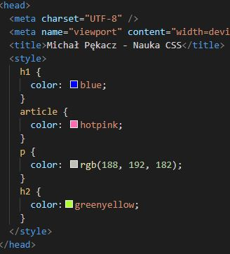
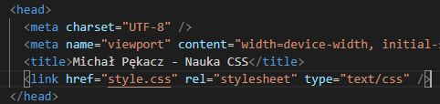
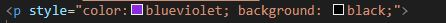
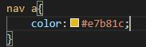
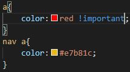

Na początek wpiszmy znacznik style w sekcji head (w sekcji body
widzimy treść, w sekcji head umieszczamy to co wpływa na wygląd,
działanie strony).

W związku z tym, że ostylowanych elementów może pojawić się więcej
najlepiej style wrzucić do oddzielnego pliku. Będzie to zewnętrzny
arkusz stylów.

Style mozna również dołączyć za pomocą atrybutu style, który
przypinamy do danego znacznika, nazywa się to stylem inline
(liniowym). Style CSS wpisujemy wewnątrz atrybutu. Możemy wpisać
więcej niż jedną własność, np

Korzystając z tego atrybutu może nam się pojawić bałagan w kodzie,
zanim zobaczymy treść lista atrybutów może osiągnąc 20 i więcej
pozycji.
Powyższe sposoby nie sprawdzą się, gdy chcemy np tylko części z
tagów nadać osobny styl. Z pomocą przychodzi nam atrybut class
(stylowanie za pomocą selektora klasy). Dzięki niemu możemy
pogrupować elementy na klasy. Przypinając atrybut class do znacznika
nadajemy mu nazwę (nazwa klasy kebab-case), a następnie w arkuszu
stylów zamiast znacznika wpisujemy
.nazwa-klasy - kropka przed nazwą to selektor klasy.
Innym sposobem jest stylowanie za pomocą id. Tak samo jak w
poprzednim przykładzie, do znacznika dodajemy id o określonej
nazwie, a w arkuszu CSS zamiast znacznika wpisujemy
#nazwa-id - # to selektor id.
Selektory można łączyć, np chcąc wyróznić linki znajdujące się tylo
w nawigacji (bardziej ogólnie elmenty znajdujące się w elementach)
należy w arkuszu stylów wpisać

W tym przypadku jeden element nie musi byc bezpośrednio nad innym,
taki sam efekt otrzymalibyśmy zamiast nav wpisując header, wtedy
ostylowalibyśmy wszystkie linki znajdujące się w sekcji header.
!important - nadpisuje wszystkie rzeczy, które mogą być zdefiniowane
dla elementów. Jeśli zdefiniujemy kolor wszystkich linków dopisując
!important, zmieni się kolor linków także w elemencie nav,
nadpisując wczesniej zdefiniowany kolor:

Jeśli nie musimy, nie należy go stosować.